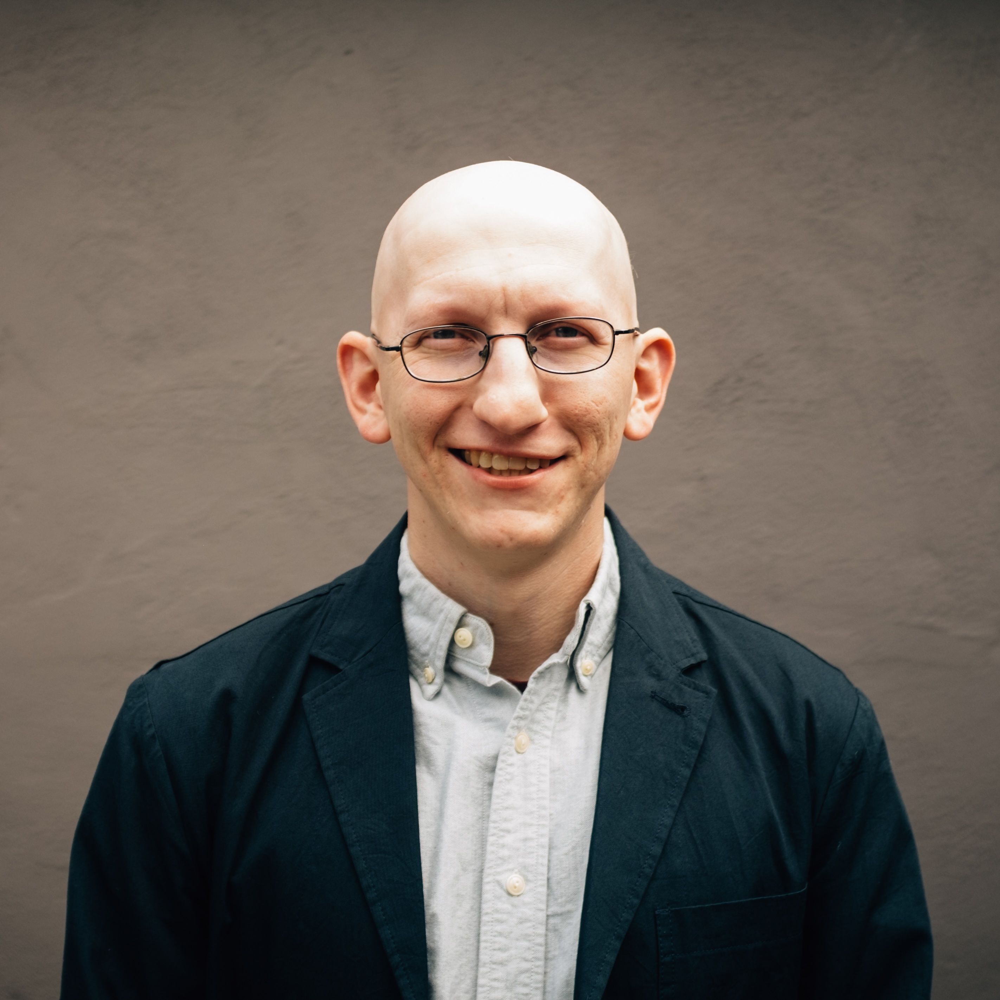

Assistant Researcher | UC Santa Cruz
Many problems in geology and geophysics occur over extreme spatial or temporal scales, and are often both three dimensional and time dependent. My research involves developing scaled-down laboratory systems to try to study these problems and developing and utilizing multi-dimensional field and laboratory measurements to better connect these analog systems to nature. I am especially interested in exploring the role of heterogeneity in determining the dynamics, complexity and roughness of both faults and fractures, as well as problems related to damage, wear, and granular dynamics.